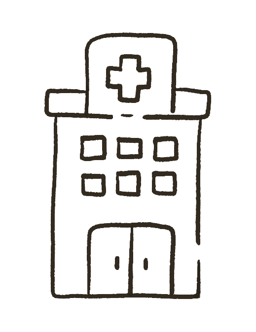

Hormonas Bio Idénticas
Se sabe que a lo largo de la vida, las mujeres pierden las hormonas producidas durante su vida fértil, (estrógenos, progesterona y testosterona), generando osteoporosis, ataques cardiacos, deterioro cognitivo, irritabilidad, aumento del riesgo de cáncer de mama, ovario y endometrio, perdida del hueso y masa muscular, falta de deseo sexual, entre otros.
Por lo que la terapia hormonal bio idéntica se presenta como la forma más natural, segura y efectiva para tratar estos problemas, permitiendo a las mujeres mejorar su calidad de vida obteniendo una longevidad saludable.
¿Que son las hormonas bio idénticas?
- Son hormonas exactamente iguales (bio idénticas) a las producidas por las mujeres durante su vida fértil.
- Y por tener estructura similar siguen el mismo metabolismo y actúan en los mismos receptores.
- Se obtienen de una planta llamada Discorea Villosa, de la cual se obtiene su principio activo la diosgenina, la cual por su semejanza con las hormonas naturales se utiliza como materia prima de hormonas bio idénticas.
- Se pueden aplicar en forma de cremas, en comprimidos orales o de aplicación subcutánea en forma de “pellet” mas conocido como “chip”.
¿Por qué utilizar hormonas bio idénticas?
- No generan los efectos adversos que si produce la utilización de hormonas sintéticas, el hígado no esta preparado para metabolizarlas generando daño hepático. Incluyendo algunos estudios que hablan también de un aumento del riesgo de cáncer de mama.
- Las hormonas bio idénticas reducen la inflamación.
- Porque reducen el riesgo de enfermedad degenerativa, patologías cardiovasculares y riesgo de cancer.
- Porque reemplazamos de manera natural las hormonas que perdemos y esto esta demostrado que mejora la calidad de vida de las pacientes.
¿Por qué utilizar pellet?
Porque es un método sencillo, seguro, práctico y fisiológico.
-
Sencillo
El procedimiento se realiza en tan solo 10 minutos.
-
Seguro
Las hormonas bio-idénticas no aumentan los riesgos de desarrollar enfermedades degenerativas, sino que los reducen.
-
Práctico
Se colocan una vez cada 6 meses y se evita aplicarlos todos los días como en cremas o cápsulas vía oral.
-
Fisiológico
Los pellets liberan una dosis constante de la hormona, evitando los picos que se producen cuando se aplica una crema o se toma una pastilla una vez al día.
El “pellet” proporciona una dosis constante de hormona. Funciona como un reservorio de hormonas naturales disponible para que el organismo las utilice.
¿Cualquier persona puede colocárselo?
Su principal indicación es en aquellas pacientes que están atravesando la menopausia o están cercana a ella, pero no tienen limite de edad.
En pacientes que aún menstrúan puede utilizarse desde alrededor de los 30 años y en este caso se utiliza sólo testosterona, para tratar síntomas específicos como perdida del deseo sexual, falta de vitalidad, angustia, depresión, entre otros.
¿Cómo se coloca?
La aplicación es subcutánea, por medio de una mínima incisión de aproximadamente 3mm bajo anestesia local, generalmente en la región de la cadera, bajo la línea del cinturón.
Se trata de un procedimiento simple e indoloro y la persona puede continuar inmediatamente con sus actividades habituales.
Habitualmente dura alrededor de 6 meses y se disuelve totalmente, pudiéndose aplicar uno nuevo las veces que se considere necesario.
¿Cuáles son los beneficios?
- Reduce los síntomas como sofocos y sequedad vaginal.
- Fortalece los huesos e incrementa la masa muscular.
- Disminuye el riesgo de osteoporosis.
- Mejora la cognición y previene la enfermedad de Alzheimer y la demencia temprana.
- Reduce el riesgo de ataque cardíaco y accidente cerebro-vascular.
- Mejora el colesterol.
- Reduce las arrugas y la flaccidez de la piel.
- Disminuye el riesgo de cáncer.
- Aumenta el deseo sexual.
- Da sensación de bienestar, mejora el estado de animo.
- Disminuye la grasa corporal.
¿Esto esta aprobado científicamente?
La ANMAT (Administración Nacional de Medicamentos, Alimentos y Tecnología medica), es la encargada de aprobar los fármacos nuevos que salen al mercado (por ejemplo las vacunas de COVID, fármacos para diferentes enfermedades, etc) evaluando si son seguros, eficaces y de calidad, antes de poder ser comercializados.
Las hormonas bio idénticas no son fármacos, no tienen una formula farmacológica, son preparados magistrales (se obtiene de plantas), por lo que su regulación para su uso en el mercado depende de la Salud Pública y no de la ANMAT.
Asi que la respuesta es si!
En conclusión...
- Es un tratamiento médico absolutamente personalizado, que debe adaptarse a las características y necesidades de cada paciente.
- Se requiere realizar una completa historia clínica y analizar un perfil hormonal específico.
- Es fundamental acompañarlo con un estilo de vida saludable, especialmente alimentación equilibrada, actividad física y evitar hábitos tóxicos como el consumo de tabaco y de alcohol.